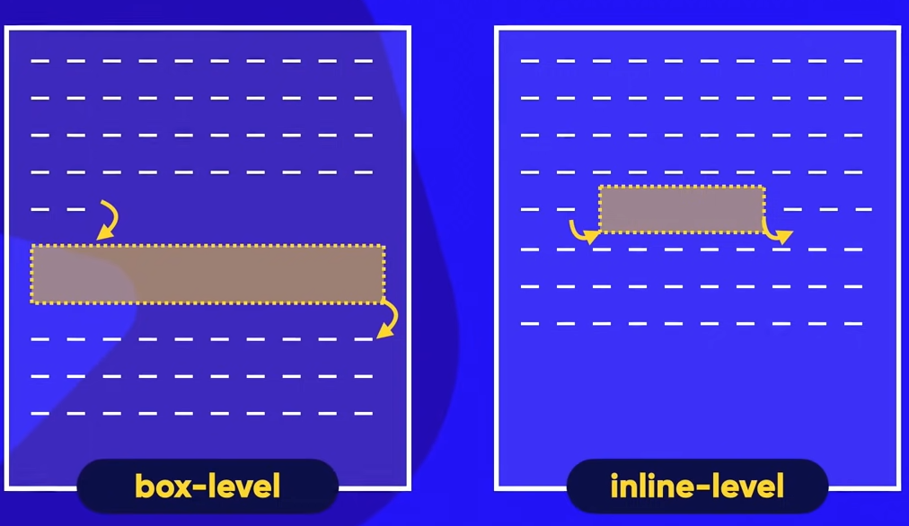
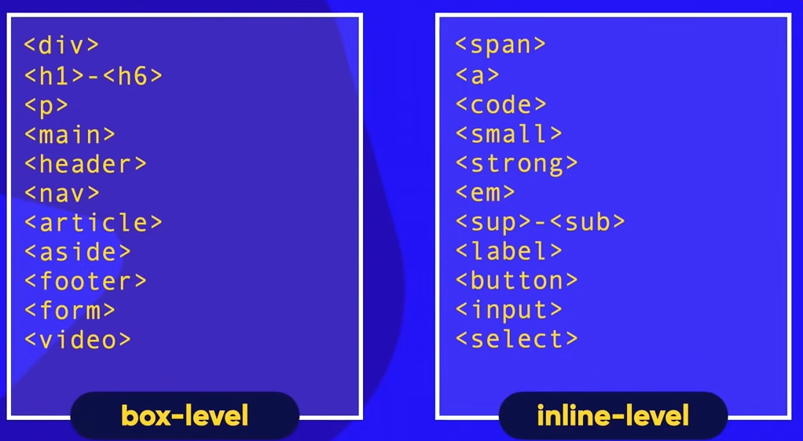

Tudo sobre caixas
As caixas podem sofrer diversas alterações em sua formatação em CSS como por exemplo:
- Largura - width
- Altura - height
- Borda - border
- Acolchoamento - padding (entre borda e conteúdo)
- Preenchimento - fill (preenche a caixa)
- Cor de fundo - background-color
- Sombra da caixa - Box Shadow (posso configurar parâmetros no Dev Tools)
- Margem - margin - Espaçamento externo
- Box-Level - inserir uma caixa em largura toda da tela logo abaixo do texto.
- Inline-level - cria uma caixa no meio do texto
exemplo abaixo de Box e Inline:

Exemplo de elementos de box level e inline level:
